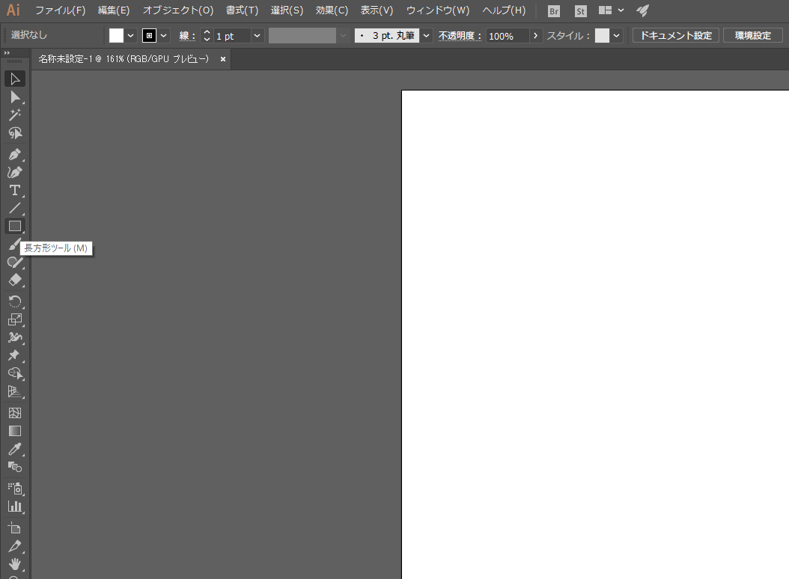
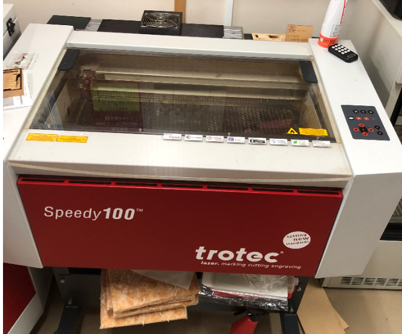
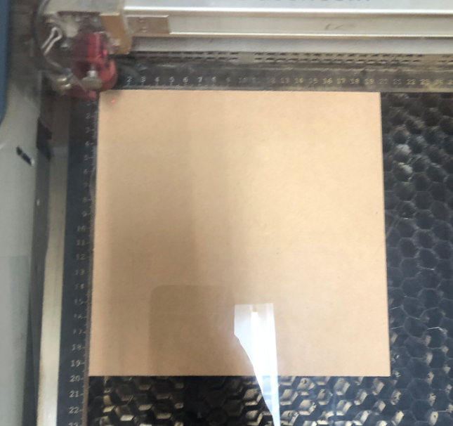
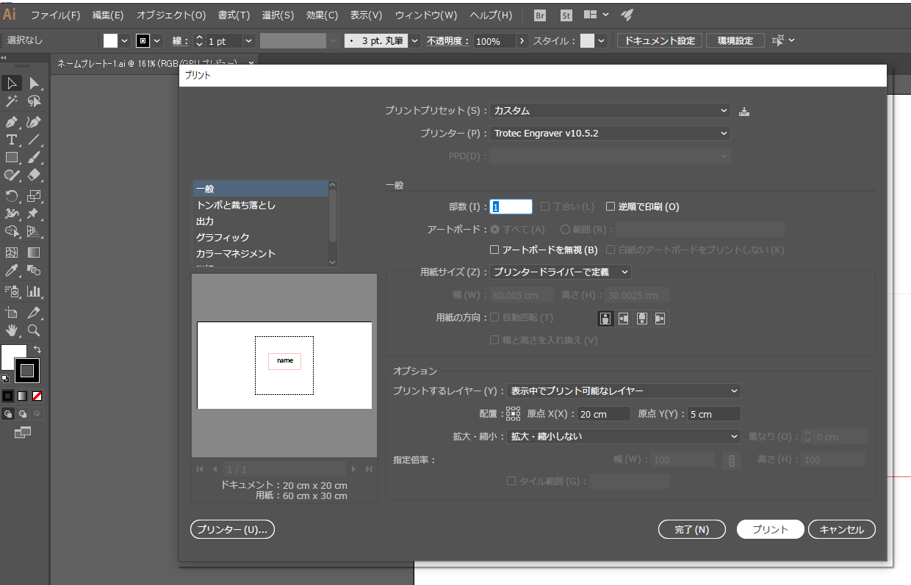
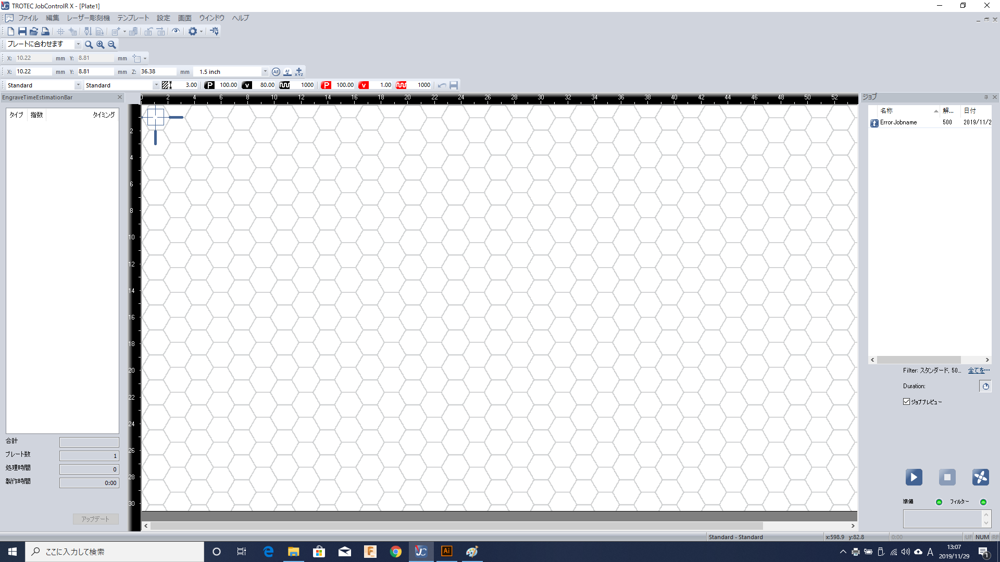
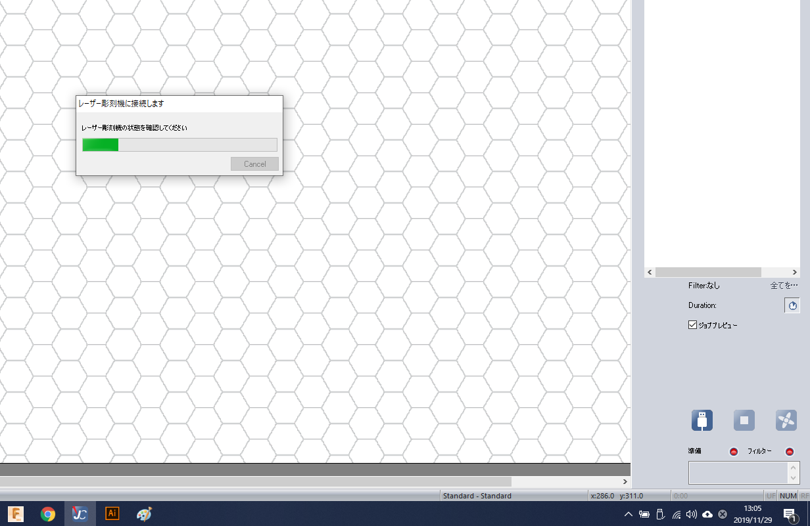
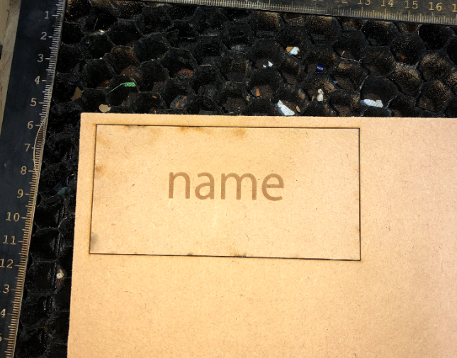

レーザーカッターの使い方はとても簡単。今回は簡単な「ネームプレート」の作成を通して説明していきます。
１．イラストレーターを起動してください
＊今回は高さ、幅：20ｃｍでデータを作成します
２．長方形ツールを選択して「長方形」を作ります
＊「塗り：なし」


４．文字ツールを使って文字を書きます（今回：name）


太さ,テキストは自由でOK「色：黒」
色の選択はカット時の「設定」で必要になっていきます
５．ファイル＞保存（形式は：.ai）

レーザーカッターを使用する場合には、メディアを置く「台座」とレーザーの「焦点」と「ポイント」を設定しなければならない
１．レーザーカッターを起動（右上部にあります）
２．右ボタン「赤い三角」は「台座」が上下に動きます＞メディアをセット（今回の基準は左上）
３．レーザーのレンズに「フォーカスツール」をセット＞「ツール」にメディアが当たるまで「台座」を上げる
４．上下左右ボタンでレーザーの開始位置を決める
５．メディアをセット
１． アプリ「jobcontrol」を起動
＊起動後、イラストレーター内で「印刷」実行
２．右ジョブリストにデータがあります
 ３．右下「プラグ」のようなボタンを押すとレーザーカッターとつながります。
＊レンズの開始位置が表示される
４．データを中央にドッラク＆ドロップ
＊レーザー開始位置にデータを移動してください

５．データをダブルクリックするとデータの内容が見れます（キーボード：ESCを押すと戻る）

６．データ外の中央をクリックするとレーザーの出力設定が出来る

＊今回は赤：カット、黒：彫刻
左側には作業にかかる時間が表示されています

７．▷ボタンで開始
８．完成
